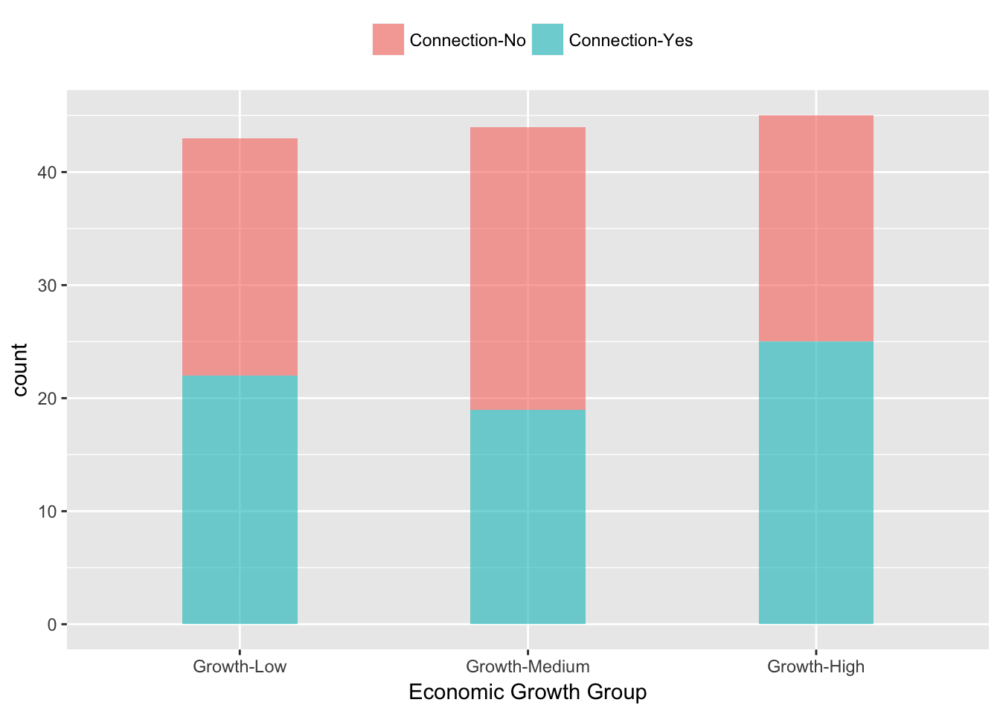
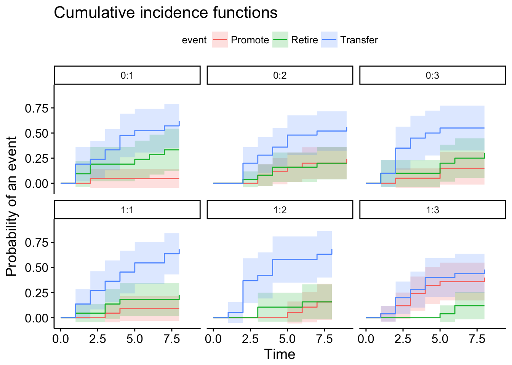

Connection V.S. Performance, Which Should I Work On This Year?
Leo Yang
Abstract
We investigated how Chinese provincial leaders’ chances of promotion depend on their performance in office and connections with top politicians. Different with former studies, we focused on a new aspect, the time-related strategy. In the real world, candidates were evaluated with yearly routine and facing the different possibilities of turnover in different phases. Using Survival model and Competing Risk model, We developed a time table of turnover possibility based on the resume of 132 provincial party secretaries during 1993 - 2009 and found the complements relationship between connection and performance in the candidate evaluation. Our research offered a deeper understanding of the micromechanism of political selection and confirmed the result of Jia et al (2015).
Measurement
- Turnover: Promote, Retire, Lateral Transfer
- Political Connection: Whether Candidates worked with Supervisor before
- Economic Performance: Average GDP growth rate
- Years in Office: The number of years in office
Was Connected Candidate in Better Place?

Conclusions
Connections and Performance are complements in the Chinese political selection process. In the extreme case, the possibility of promotion with good economic performance and connection is more than three times larger than those with bad economic performance and not connected.
COX-PH Survival, Possibility of Promote

Competing Risk Analysis - Possibility of Multiple Events
